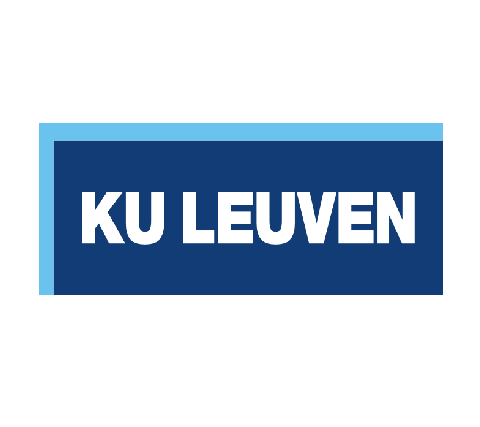
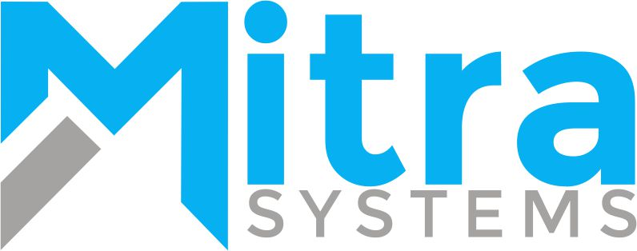

4
Professional roles
Junior Cybersecurity Engineer
I work across secure system operations, infrastructure support, database reliability, and defensive security practice. My resume is anchored in enterprise environments, Linux and Windows administration, and a current Master of Cybersecurity at ULB.
4
Professional roles
6
Technical domains
5
Certification tracks
2
Security competitions
Profile
My experience spans research infrastructure, tax systems, enterprise storage platforms, and software development. Across those settings, the common thread has been dependable operations: securing environments, validating system integrity, improving access control, and resolving incidents under pressure.
The current emphasis is defensive security. That includes secure configuration, log analysis, vulnerability assessment, network security fundamentals, and hands-on practice through labs and competitions.
Recent environments

KU Leuven - COSIC Secure research infrastructure and online voting systems Rwanda Revenue Authority Database operations, system support, and tax platform data integrity
Mitra Systems IBM Power Systems, storage, health checks, and high availabilityCore expertise
Cybersecurity
Secure configuration, vulnerability assessment, log review, access control management, cryptography fundamentals, and incident investigation.
Systems
IBM Power Systems, FlashSystem, Storwize, system upgrades, monitoring, health checks, and secure infrastructure support for critical services.
Cloud and virtualization
IBM Hybrid Multicloud, VMware, VirtualBox, Firebase ecosystem work, and virtualized environments used for attack simulation and defensive analysis.
DevOps and tooling
Git, Docker, Vagrant, Ansible, Linux server management, deployment workflows, DNS configuration, and domain hosting.
Development
C, C++, Python, Java, JavaScript, PHP, HTML, CSS, Flask, React, Next.js, backend API development, and automation scripting.
Databases
MySQL, MariaDB, PostgreSQL, MongoDB, database design, performance tuning, and validation work that keeps operational data dependable.
Experience
A to Z Technology Systems
Kigali, Rwanda
Security practice
Home lab
Built for log analysis, attack simulation, and system-level observation across different operating environments.
CTF work
Challenge-based practice used to sharpen investigation habits, structured debugging, and technical depth under constraints.
Competitions
Competitive environments that reinforce offensive understanding, defensive reasoning, and fast signal extraction from limited evidence.
Contact
If you want the exact resume, use the PDF. If you want the summary version, this homepage now reflects the same profile, dates, and technical emphasis.